Can you read a network’s mind?
Researchers at MIT’s CSAIL lab recently posted some intriguing early experiments on something they are calling weight-space programming, where a large language model (LLM), a particular type of extremely large neural network, directly reads, writes and edits much smaller neural networks. These experiments became the main topic of lunchtime conversation for several of us at Turing this week, and we’ve shared some of our initial thoughts in a working note.
One of the things we did to try and understand what was and was not surprising about the LLM’s ability to read and write neural network structures was to visualise the network information the LLM was being provided for the “guess the computer game” experiment (experiment 1 in the MIT blog post). We’ve turned this into an interactive demo you can try out yourself to get a feel for how hard you think the task is.
Which game is this network playing?
The MIT researchers show that GPT-6 Astra, OpenAI’s latest frontier LLM could name the game a small neural network had learned to play, from nothing but its raw weights (the strength of connections between nodes in the network). Here is the same evidence, drawn as pictures. Try it yourself and see how you do. The LLMs manage to name all 4 real games and don’t get fooled by the scrambled non-game.
Each network learned to play one of four Atari-style games on a 10 × 10 board. For every cell of the board we show how big its first-layer weights are, one map per input channel; darker means bigger. Cells that never mattered in training stay pale, so each map is close to a record of where things appeared. One of the five is a scrambled control.
The game choices
Breakout
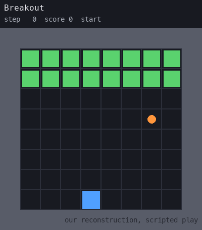
Pong
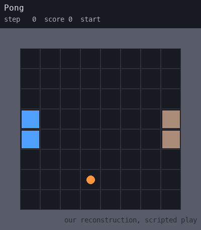
Pac-Man
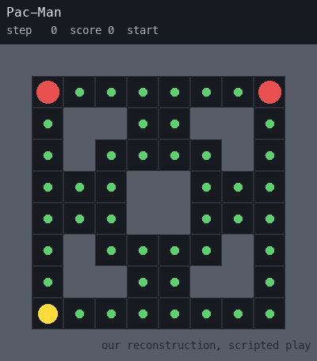
Freeway
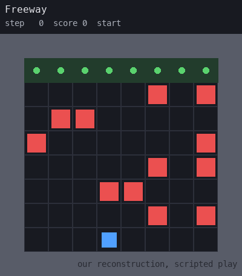
Game orders below have been randomised
Network 1
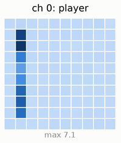
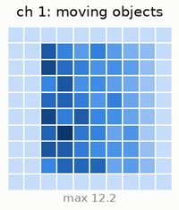
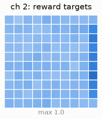
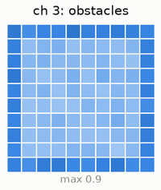
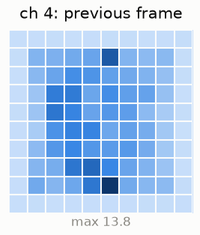
The agent map is a single column on the left edge: a paddle that only moves up and down.
Network 2
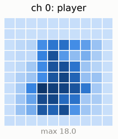
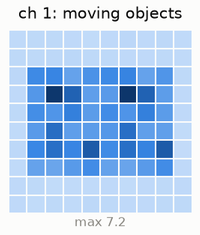
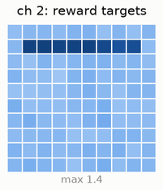
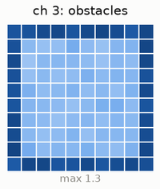
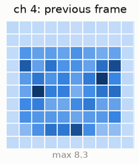
The agent lives in a strip down the middle of the board, and the reward targets are one row at the top: a chicken crossing the road to reach the far side.
Network 3
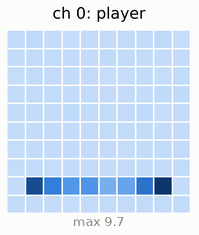
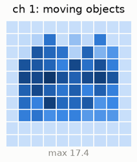
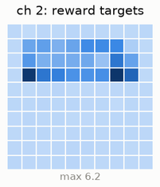
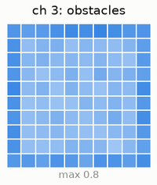
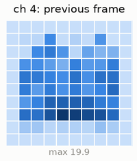
The agent map is a single row near the bottom (the paddle), and the reward targets sit in rows near the top (the bricks).
Network 4
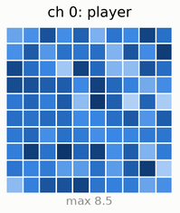
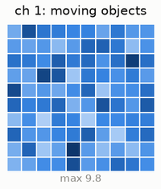
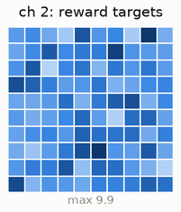
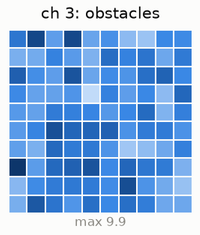
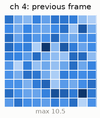
This is the control: Breakout’s network with its weights shuffled. The numbers are the same, but the picture is gone.
Network 5
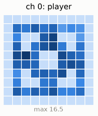
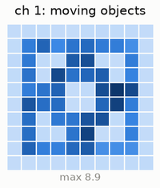
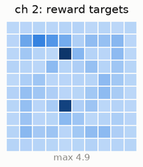
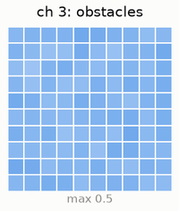
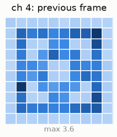
The agent and the moving objects trace the same loops of corridors: a maze.
Answered 0 of 5.
Three games nobody has seen before
We invented three new games, so no model could have read about them, and trained a network on each. Match the network to the game. In these new games, the LLMs can guess the structure but struggle to identify the dynamics.
The game choices
Reverse space invaders
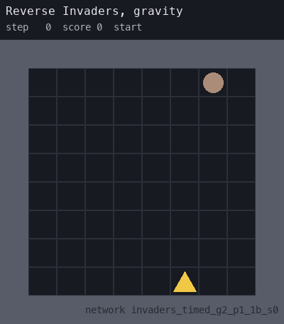
Whac-a-mole
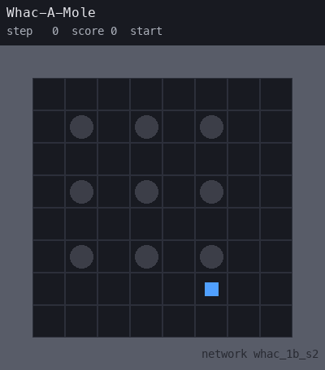
Two-way shooter
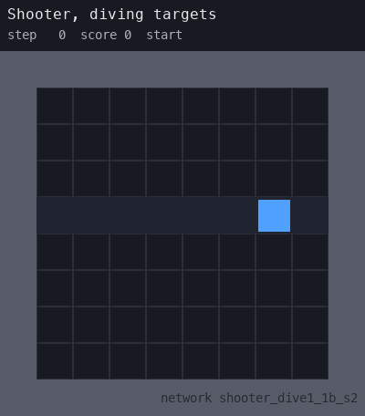
Game orders below have been randomised
Mystery game 1
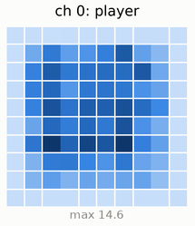
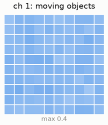
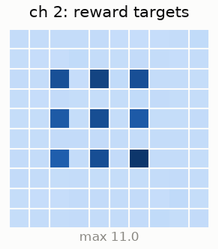
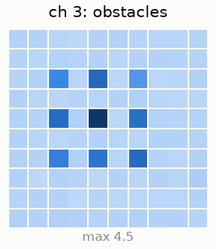
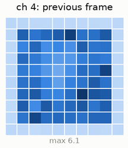
The reward targets are nine fixed spots in a three-by-three grid: the holes the moles pop out of.
Mystery game 2
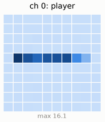
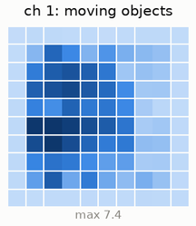
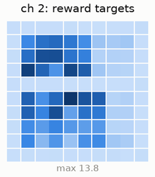
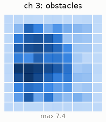
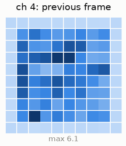
The agent only ever appears in one row across the middle of the board.
Mystery game 3
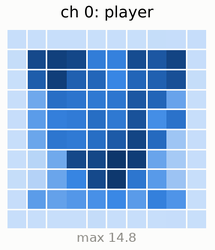
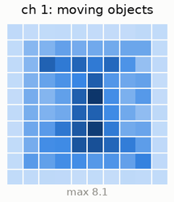
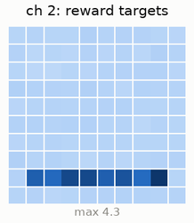
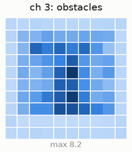
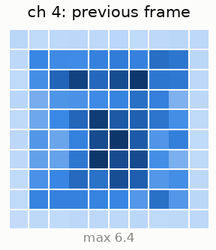
The reward targets fill a single row near the bottom, where things land.
Answered 0 of 3.
Experiment 1 networks: weights released by Takehi, Teoh, Zhang and Khattab (MIT CSAIL) with “Sparks of Weight-Space Programming”, CC BY 4.0.